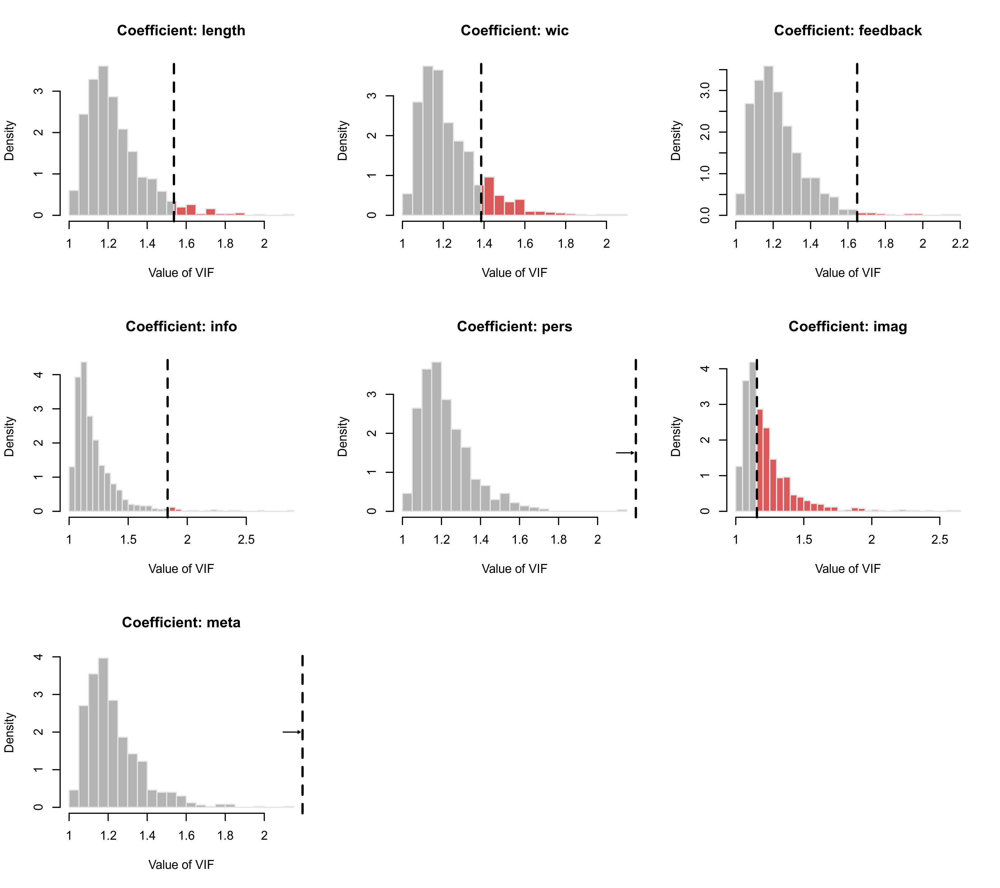
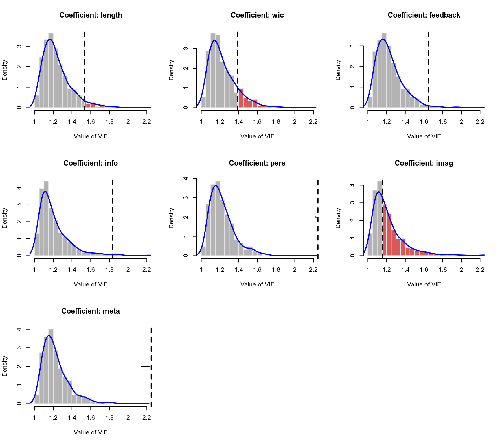

plot.vif.rma.RdPlot method for objects of class "vif.rma".
an object of class "vif.rma" obtained with vif.
argument to be passed on to the corresponding argument of hist to set (the method for determining) the (number of) breakpoints.
logical to specify whether frequencies (if TRUE) or probability densities should be plotted (the default is FALSE).
optional character string to specify the color of the histogram bars.
optional character string to specify the color of the borders around the bars.
optional character string to specify the color of the bars that are more extreme than the observed (G)VIF value (the default is a semi-transparent shade of red).
optional character string to specify the color of the kernel density estimate of the distribution that is superimposed on top of the histogram (the default is blue).
the fraction (up to 0.5) of observations to be trimmed from the upper tail of each distribution before its histogram is plotted.
numeric value to be passed on to the corresponding argument of density (for adjusting the bandwidth of the kernel density estimate).
numeric vector to specify the width of the vertical lines corresponding to the value of the observed (G)VIFs and of the density estimate (note: by default, the density estimate has a line width of 0 and is therefore not plotted).
other arguments.
The function plots the distribution of each (G)VIF as simulated under independence as a histogram.
Arguments breaks, freq, col, and border are passed on to the hist function for the plotting.
Argument trim can be used to trim away a certain fraction of observations from the upper tail of each distribution before its histogram is plotted. By setting this to a value above 0, one can quickly remove some of the extreme values that might lead to the bulk of the distribution getting squished together at the left (typically, a small value such as trim=0.01 is sufficient for this purpose).
The observed (G)VIF value is indicated as a vertical dashed line. If the observed exceeds the upper plot limit, then this is indicated by an arrow pointing to the line.
Argument col.out is used to specify the color for the bars in the histogram that are more extreme than the observed (G)VIF value.
A kernel density estimate of the distribution can be superimposed on top of the histogram (as a smoothed representation of the distribution). Note that the kernel density estimate of the distribution is only shown when setting the line width for this element greater than 0 via the lwd argument (e.g., lwd=c(2,2)).
Viechtbauer, W. (2010). Conducting meta-analyses in R with the metafor package. Journal of Statistical Software, 36(3), 1–48. https://doi.org/10.18637/jss.v036.i03
vif for the function to create vif.rma objects.
### copy data from Bangert-Drowns et al. (2004) into 'dat'
dat <- dat.bangertdrowns2004
### fit mixed-effects meta-regression model
res <- rma(yi, vi, mods = ~ length + wic + feedback + info + pers + imag + meta, data=dat)
#> Warning: 7 studies with NAs omitted from model fitting.
### use the simulation approach to analyze the size of the VIFs
vifs <- vif(res, sim=TRUE, seed=1234)
vifs
#>
#> vif prop
#> length 1.5371 0.95
#> wic 1.3860 0.86
#> feedback 1.6490 0.98
#> info 1.8340 0.98
#> pers 5.6780 1.00
#> imag 1.1554 0.47
#> meta 4.5333 1.00
#>
### plot the simulated distributions of the VIFs
plot(vifs)

### add densities, trim away some extremes, and set break points
plot(vifs, lwd=c(2,2), trim=0.01, breaks=seq(1,2.2,by=0.05), adjust=1.5)
